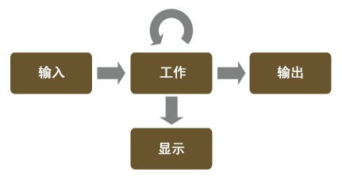

颜色管理包含在颜色空间之间转化颜色值。此转化发生在颜色流水线的特定点。

- 导入媒体时，必须将颜色值转化到通用的工作空间，以使颜色信息可以与其他源正确结合。例如，若要将拍摄现场片段与 3D CG 渲染元素和绘制的蒙版背景结合，图像应采用相同的颜色空间。如果图像源于不同的颜色空间，则它们需要不同的输入变换才能将其转化为通用的工作空间。
- 在工作时，必须将当前工作空间中的颜色值转化到适合您系统的显示器的颜色空间。例如，如果您正在场景线性颜色空间中工作，则需要应用变换以对图像进行色调贴图并将其转化为适合显示的值。此显示变换不烘焙到基础颜色值中，而仅动态应用以进行预览。
- 此外，您在工作中可能还希望切换颜色空间以执行特定操作。例如，某些操作（如合成和模糊）最适合在场景线性空间中执行，但其他操作（如噪波和颗粒操作或跟踪与稳定）最适合在视频或对数空间中执行。执行这种转化时，建议使用可反转变换以保留原始颜色信息。此外，您还需要更改显示变换以匹配新的工作空间。
- 最后，当输出时，您需要将颜色从工作空间转化到适合您的交付内容的颜色空间。例如，SD 视频、HD 视频和数字电影都使用不同的颜色空间，并需要不同的输出变换。